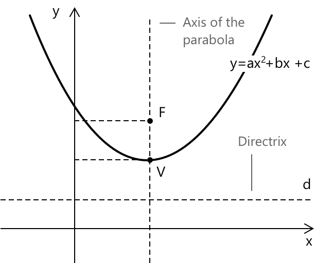

Геометрична інтерпретація квадратних рівнянь
Від рівняння до параболи
Графічне зображення відповідної функції \( y = ax^2 + bx + c \), пов'язаної з квадратним рівнянням \( ax^2 + bx + c = 0 \), є параболою. Її вершина відповідає точці максимуму або мінімуму кривої залежно від знаку коефіцієнта \( a \): вершина є мінімумом, якщо \( a > 0 \), і максимумом, якщо \( a < 0 \). Форма та положення параболи визначаються значеннями коефіцієнтів \( a \), \( b \) та \( c \).
- Коефіцієнт \( a \) визначає напрямок, ширину та крутизну параболи: більші абсолютні значення \( a \) роблять графік вужчим, тоді як менші значення роблять його ширшим.
- Коефіцієнт \( b \) впливає на горизонтальне положення вершини.
- Вільний член \( c \) визначає вертикальний зсув усієї кривої.
Якщо парабола записана в стандартній формі як \( f(x) = ax^2 + bx + c \), тоді:
-
Якщо \( a > 0 \), парабола відкривається вгору \( \cup \) і має точку мінімуму.
-
Якщо \( a < 0 \), парабола відкривається вниз \( \cap \) і має точку максимуму.
-
В обох випадках координати вершини задаються формулою: \[ V = \left(-\frac{b}{2a},\ f\left(-\frac{b}{2a}\right)\right) \]
Якщо парабола записана в стандартній формі \( f(y) = ay^2 + by + c \), тоді:
-
Якщо \( a > 0 \), парабола відкривається вправо \( \subset \).
-
Якщо \( a < 0 \), парабола відкривається вліво \( \supset \).
-
В обох випадках координати вершини задаються формулою: \[ V = \left(f\left(-\frac{b}{2a}\right),\ -\frac{b}{2a}\right) \]
Вершина та симетрія в окремих випадках
Графічно загальна парабола \(y = ax^2 + bx + c\) з віссю, паралельною осі y, виглядає наступним чином:

-
Коли \( b = 0 \) і \( c \neq 0 \), рівняння набуває вигляду \(y = ax^2 + c\). Парабола має вершину в точці \( V(0, c) \), а її віссю симетрії є вісь y.
-
Коли \( c = 0 \) і \( b \neq 0 \), рівняння набуває вигляду \(y = ax^2 + bx\). Парабола має вершину в точці: \[ V \left( -\frac{b}{2a}, -\frac{b^2}{4a} \right) \] Парабола завжди проходить через початок координат ( 0, 0 ).